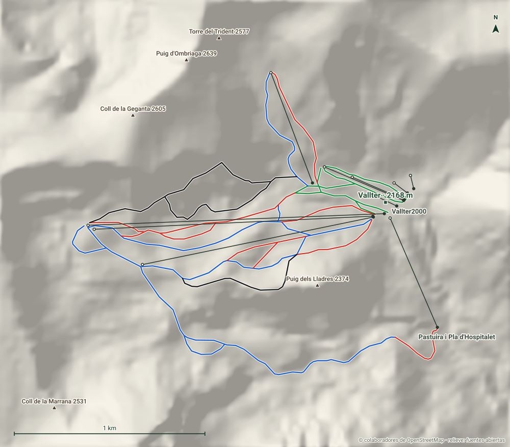

Vallter 2000
Ripollès · Girona
- Pistas
- 15 km
- 39 trazados
- Cota máxima
- 2496 m
- mínima 2009 m
- Desnivel
- 487 m
- esquiable
- Remontes
- 10
- 2 telesillas · 5 telesquís
En el circo glaciar de Morens, sobre Setcases. Es la estación más oriental del Pirineo, cerca del nacimiento del río Ter.
Hoy
Vallter 2000 ahora mismo
Estado de pistas y remontes según el último parte publicado, y las webcams de la estación.
Webcams
Estado y webcams de Infonieve.es, a partir de los partes y cámaras de cada estación. Antes de salir, confírmalo en la web oficial.
Próximos 7 días
Nieve y tiempo previstos
Previsión para la cota alta (2496 m) y la base (2009 m).
Previsión de modelos meteorológicos de Open-Meteo (CC BY 4.0). Es previsión, no observación: lo que hay abierto hoy está en el estado de pistas.
Plano
Plano de pistas
Pasa el cursor o toca una pista o un remonte para ver su nombre, longitud y desnivel.
Trazados: © colaboradores de OpenStreetMap (ODbL). No es el plano oficial de la estación ni refleja aperturas.
Mapa 3D
Vallter 2000 en tres dimensiones
Relieve real, fotografía aérea, sol y sombras, viento e inclinación. Se carga solo cuando lo pides porque pesa.
Pantalla completa
Recomendado con wifi. En móvil, el mapa completo va mejor en la app.
Pistas
39 pistas, 15 km
La más larga con nombre es El Xalet (1,4 km, azul).
VerdeMuy fácil
8 pistas · 2 km
Ver nombres
- Pla de Morens I 0,5 km
- Pla de Morens II 0,5 km
- Enllaç Morenç 0,3 km
AzulFácil
16 pistas · 6,1 km
Ver nombres
- El Xalet 1,4 km
- Braquins 1,4 km
- Jordi Pujol 0,9 km
- Font de la Perdiu 0,7 km
RojaIntermedia
11 pistas · 4,2 km
Ver nombres
- Pista de l'Estadi 1 km
- La Xemeneia 0,6 km
- Puig dels Lladres 0,5 km
- Pala de Bumps 0,4 km
- Variant de l'Estadi-Tartera 0,3 km
- Enllaç Estadi 0,3 km
NegraDifícil
4 pistas · 2,7 km
Ver nombres
- Pala de la Mort 0,9 km
- La Tartera 0,8 km
- Canal de la regalèssia 0,7 km
Remontes
10 remontes
El de mayor desnivel: TS Jordi Pujol Planella, 334 m.
| Remonte | Tipo | Longitud | Desnivel | Llegada |
|---|---|---|---|---|
| TS Jordi Pujol Planella | Telesilla | 1556 m | 334 m | 2496 m |
| — | Telesquí | 1513 m | 331 m | 2493 m |
| TQ Bac Barquins I | Telesquí | 1236 m | 269 m | 2431 m |
| TQ Xemeneies | Telesquí | 618 m | 184 m | 2410 m |
| TS Enric Panella | Telesilla | 625 m | 151 m | 2161 m |
| TQ Morens II | Telesquí | 450 m | 79 m | 2240 m |
| TQ Morens I | Telesquí | 297 m | 41 m | 2202 m |
| Cinta Morens | Cinta | 128 m | 17 m | 2179 m |
| Cinta L'Isard | Cinta | 88 m | 11 m | 2175 m |
| Cinta Marmota | Cinta | 71 m | 7 m | 2173 m |
Longitud en planta y desnivel sobre el modelo de relieve. No incluye horarios ni estado de apertura.
Guía práctica
Antes de ir a Vallter 2000
Cómo llegar
Ripollès, Girona. Coordenadas del dominio: 42,4253, 2,2554.
Ver en OpenStreetMap · Cómo llegar en coche
En invierno comprueba el estado de la carretera y si hacen falta cadenas.
El terreno
- Base: Vallter, 2168 m
- Bastiments, 2881 m
- Pas del Bou, 2876 m
- Pic dels Bacivers de Prats, 2844 m
- Gra de Fajol, 2714 m
- Núcleos: Vallter2000, Pastuira i Pla d'Hospitalet
Enlaces oficiales
Forfaits, horarios y aperturas cambian durante la temporada: los publica la estación.
Vallter 2000 sin cobertura
Descarga este mapa en la app para Android y úsalo en pistas aunque no haya red.